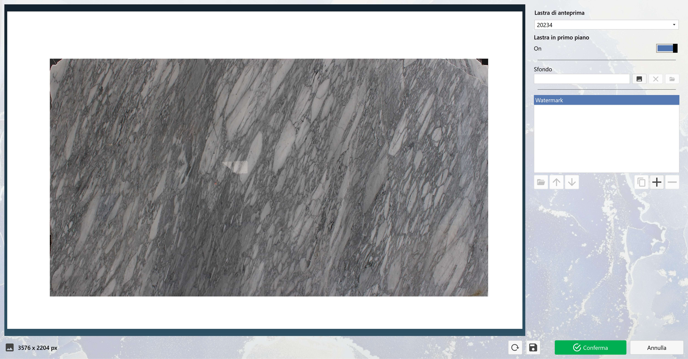
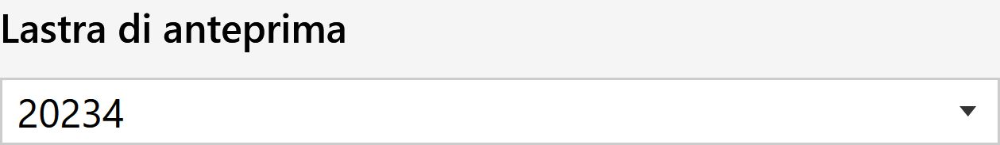
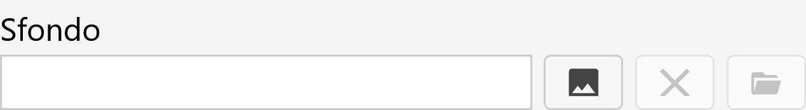
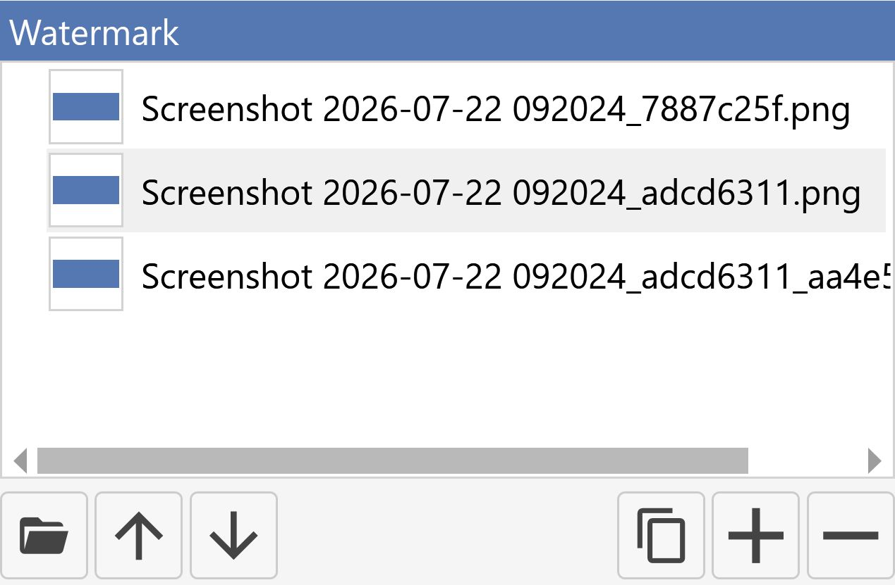
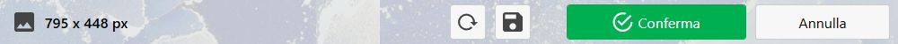

Nella seguente sezione viene descritta l’optional “Template Immagine”, tale optional permette di impostare uno sfondo e dei watermark da visualizzare al salvataggio della lastra. Questo optional può essere richiesto di venire aggiunto alla prima installazione del nostro operatore.
Attivando questo optional la schermata “Homepage” verrà visualizzata come segue:

Card
Si può notare che è comparsa una nuova card selezionabile:
Template immagine |
Finestra
All’apertura della finestra la schermata sarà la seguente:

La schermata ha diverse sezioni:
Anteprima template
Nella sezione anteprima viene visualizzata una lastra a scelta con lo sfondo base dove è possibile tramite la sezione di aggiunta immagini a destra sarà possibile modificare l’immagine.
Tale sezione è solo di visualizzazione.

Impostazioni lastra
Nella seguente sezione è possibile gestire la lastra di anteprima con i seguenti parametri:
 | Lastra di anteprima |
 | Lastra in primo piano |
Aggiunta immagini
Nella seguente sezione è possibile aggiungere le immagini al template
Sfondo

Tramite i pulsanti a destra è possibile eseguire azioni sullo sfondo dell’immagine:
Seleziona sfondo | |
 | Rimuovi sfondo |
Apri cartella |
Watermark
Nella seguente sezione è possibile aggiungere delle immagini sopra allo sfondo che compaiano nell’immagine.

I pulsanti nella sezione inferiore permettono di eseguire varie azioni:
 | Aggiungi |
Rimuovi | |
Clona | |
Apri cartella | |
 | Sposta |
Proprietà watermark
La seguente sezione compare soltanto se si ha selezionato un watermark dalla lista, permettendo di modificare delle impostazioni su quella immagine

Angolo |
Offset X/Y |
Larghezza/Altezza |
Opacità |
Rotazione |
Sezione inferiore
La sezione inferiore gestisce tutte le azioni sull’intera schermata dalla conferma alle modifiche.

Reset | |
 | Salva |